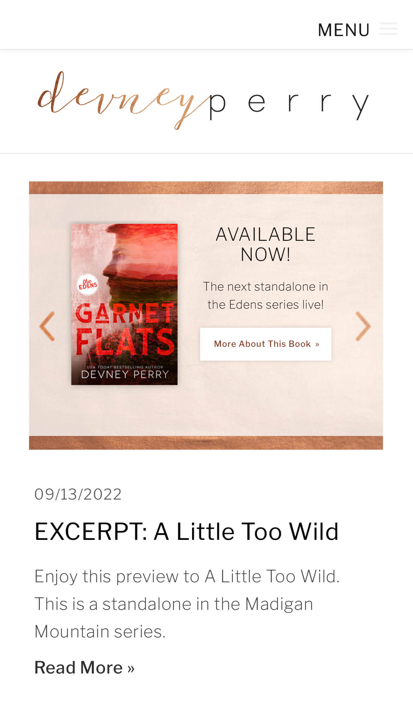

Hick's Law
Priceless Design Studio
The Priceless Design website demonstrates Hick's Law by providing users with one clear choice: "work with us." If users would like more information, they can select the menu or scroll further down the site, their main choice is obvious.
Visual Heirarchy
Randi Cooley Wilson
Randi Cooley Wilson's website demonstrates visual hierarchy because the user's eye is immediately drawn to the image of the book series she is promoting. The user's eye next goes to where they can buy the author's books, and finally to the author's name and tagline.
White Space
Devney Perry
Author Devney Perry's website shows use of white space in the design.There is space between the site logo (the author's name) and the carousel with her available books. White space is again used to separate the book carousel from a preview of a blog post.